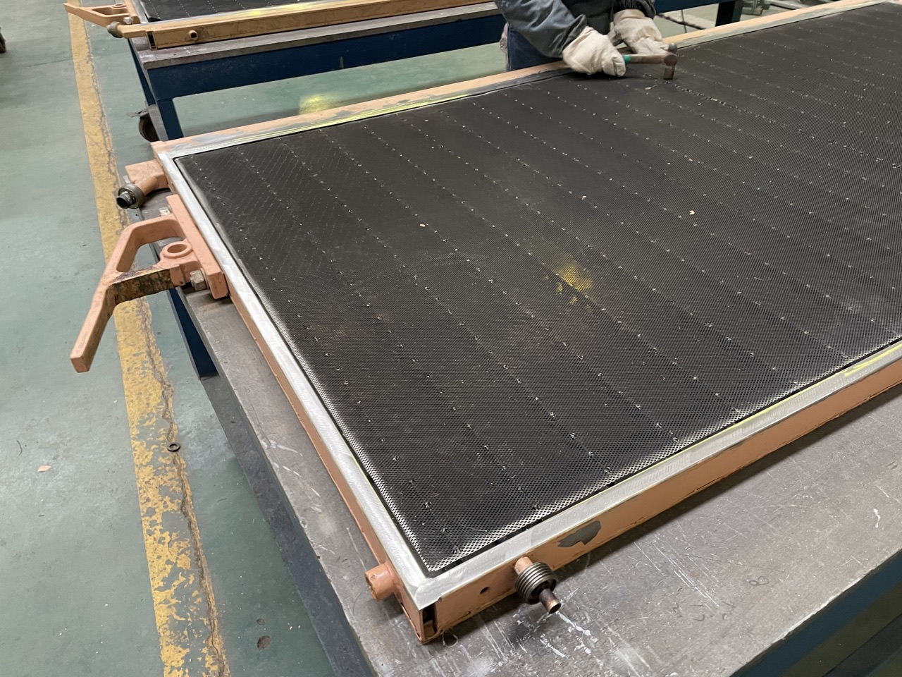
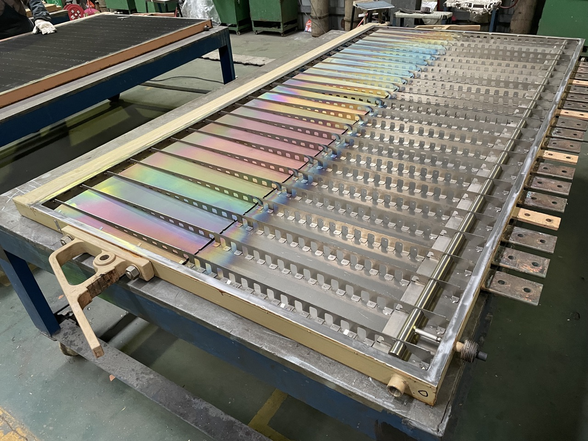
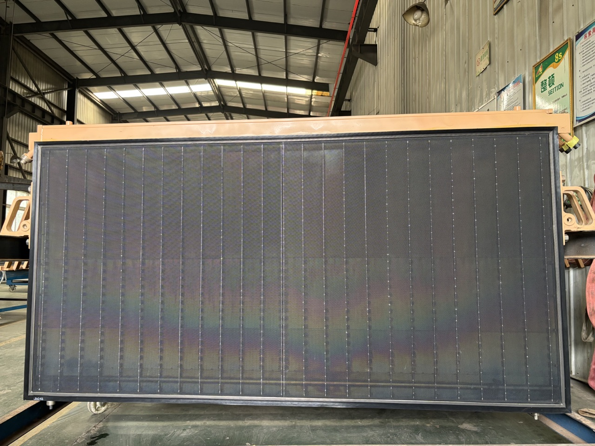
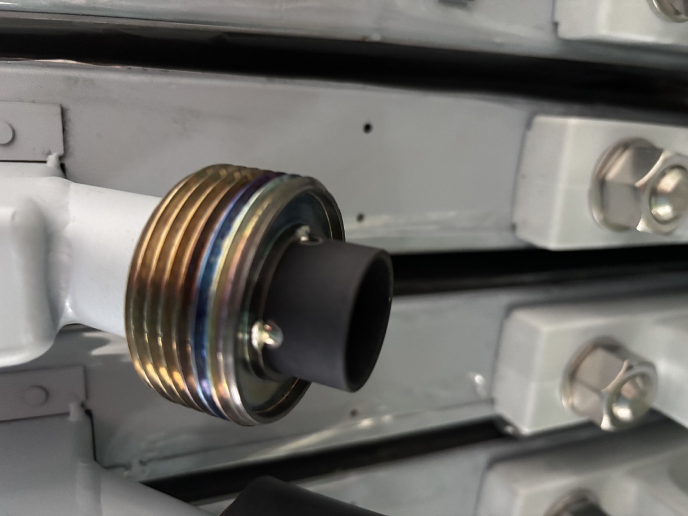
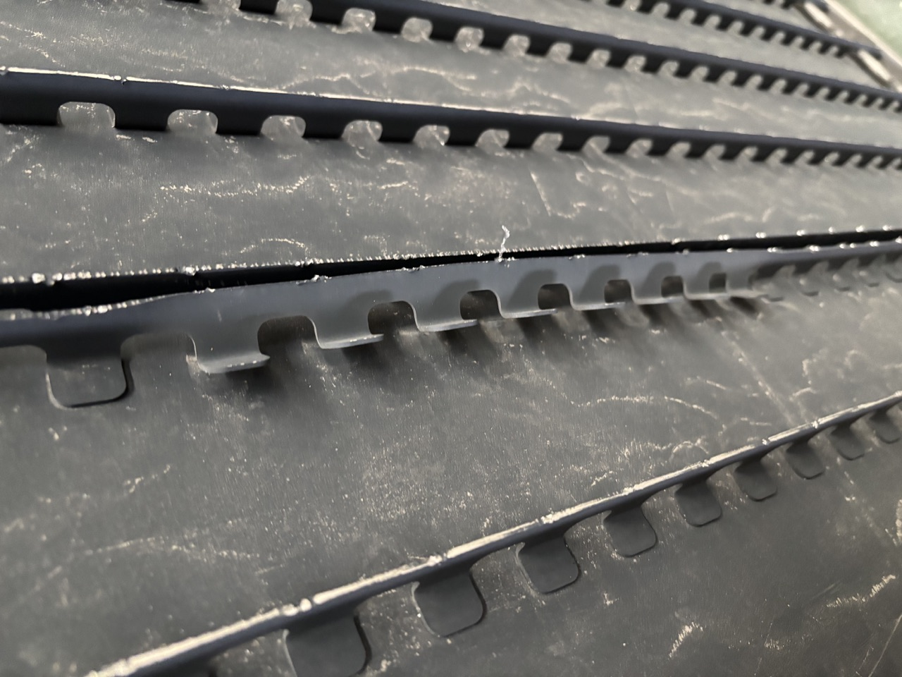

셀 점검
보수 방법을 제안하기 전에 눈에 보이는 손상, 실링면, 프레임 상태, 연결부를 확인합니다.

서비스 범위
보수 방법을 제안하기 전에 눈에 보이는 손상, 실링면, 프레임 상태, 연결부를 확인합니다.
가스켓 시트, 프레임 접촉면, 실링 압축에 영향을 주는 부위를 중점적으로 확인합니다.
적합한 셀은 구조, 플레이트 상태, 운전 목표에 따라 막 간격 개조 가능성을 검토합니다.
코팅 보수, 프레임 팔라듐 처리, 티타늄-팔라듐 프레임 개조는 프로젝트별로 평가합니다.
DD350, UHDE, INEOS, Asahi Kasei, Bluestar, Chlorine Engineers 및 기타 플랫폼은 확인 후 적용합니다.
사진, 도면, 수량, 플랫폼, 손상 위치, 매체, 온도, 압력, 운전 이력이 필요합니다.
보수 및 개조 사진




평가 절차
사진, 도면, 사용 샘플, 플랫폼 정보를 검토합니다.
작업 범위, 재료, 관리점, 납품 절차를 확인합니다.
승인된 작업을 수행하고 실링 및 조립 관련 확인을 진행합니다.
출하 전 외관, 주요 치수, 포장 상태를 확인합니다.
보수 평가 요청